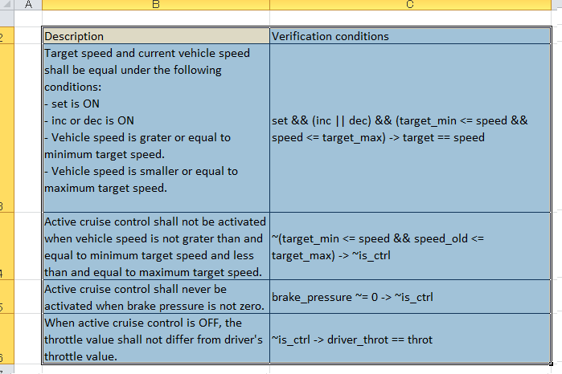
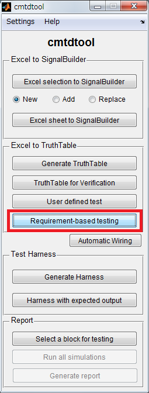
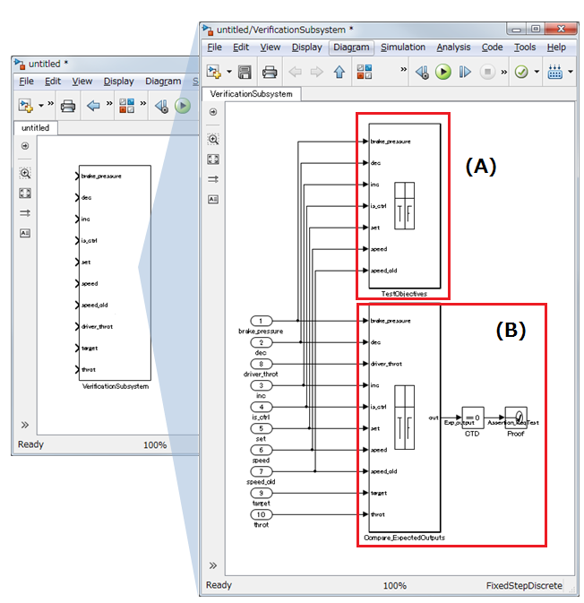
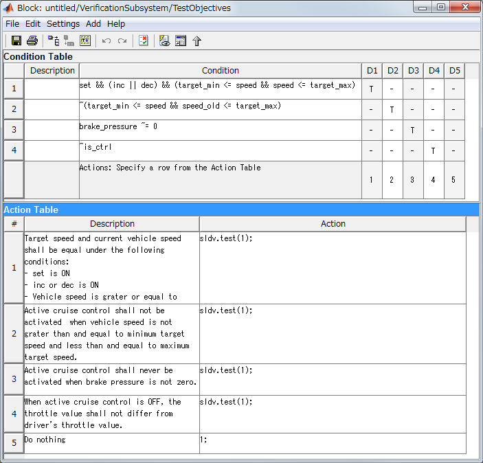
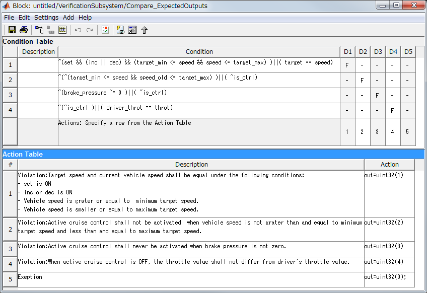
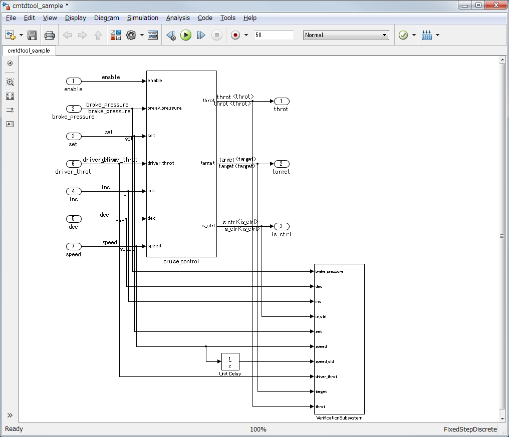
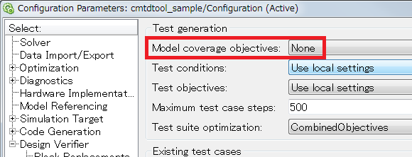

Generate TruthTable block for Requirement-based Testing
- Requires Simulink Verification and Validation™
- Requires Simulink Design Verifier™
- Requires Simulink® and Stateflow®
Contents
Functional detail
This feature generates a requirement model that can be used for doing Requirement-based Testing using Simulink Design Verifier functionality.
(1) Describe the verification equations and descriptions for them in an Excel spread sheet as below example and select the region in the Excel.

(2) Click "Requirement-based testing" button

(3) A subsystem block will be automatically generated as following figure.

Explanation of (A) in the above figure
A Truth Table block in the below figure is generated for the (A) part in the above figure. This (A) part is to generate test objectives to achieve P condition of "P implies Q" described by "P -> Q" in Verification conditions columns in the Excel. The "sldv.test(1)" in the Action column in the Truth Table block represents a test objective to be generated by Simulink Design Verifier feature. With this (A) part, test cases achieving every P conditions in P -> Q format in the given Excel spread sheet can be generated.

Explanation of (B) in the above figure
A Truth Table block in the below figure is generated for the (B) part in the above figure. This part is to verify the "P implies Q" condition by either by simulation or Property Proving provided by Simulink Design Verifier. "P -> Q" is translated to ~(P) || (Q) as shown in Condition column in the Truth Table block. Test cases achieving P condition obtained by the (A) part can be verified by this (B) part by simulations. If "P -> Q" is falsified by simulation, the Truth Table block outputs an integer number other than zero. Then Proof block connected to the Truth Table block throws an assertion during simulation at the time the violation occurred.

Place generated "VerificationSubsystem" into the controller model and wire related signals with appropriate signal lines.

How to use this feature
There are two ways of using this feature
Test generation and simulation
If you run test generation of Simulink Design Verifier, test cases achieving P conditions represented by "P -> Q" in the Excel by (A) part. Then, you can verify that the expected output "Q" is satisfied when P is exercised in the (B) part in the generated harness model. If Q is not satisfied when corresponding P is exercised, the Assertion block will throw an assertion during simulation. With this usage, you can obtain a set of a test case and a result of verification for every lines of your requirement specifications (verification equations) written in Excel spread sheet.
Note : By setting "Model coverage objectives" to "None", Simulink Design Verifier generates test cases achieving only on test objectives specified by a user.

Using formal verification
If you run Property Proving for your model, Formal verification will be applied to the verification equations provided in the Excel. If there is a violation, a counter example will be generated.
Rules for writing the Verification condition
- 1st column "Description": Used as comments in the model. Do not affect for simulation.
- 2nd column "Verification conditions": Specify conditions corresponding to the 1st column. You can write MATLAB equation including arithmetic operator, logical operator, relational operator, and so on. You can use "implies" operator with "->". The A -> B is simply replaced by ~A || B.
Note: Currently, the temporal logic operator is not supported by this feature. You can use Delay block for referring the past signal.
Running a demo
- Open cmtdtool_sampledata.xls in cmtdtool\demo folder.
- Select B2:C6 in "RequirementBasedTest" sheet.
- Click "Requirement-based testing" button in cmtdtool.
- Check that "VerificationSubsystem" is generated in a new model.
- Run the following command and you will see that the same operation can be done by API.
xls2RequirementBaseTestTruthTable('cmtdtool_sampledata_en.xls','RequirementBasedTest','B2:C6');